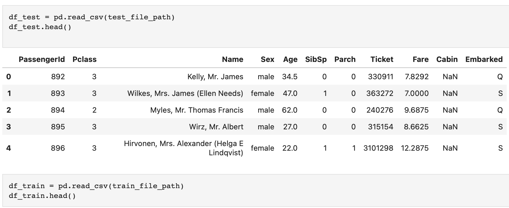
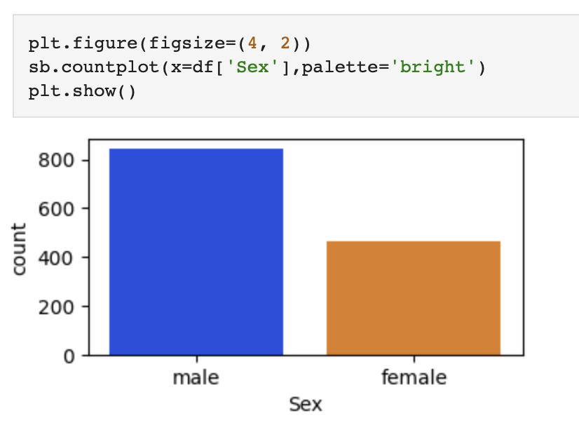
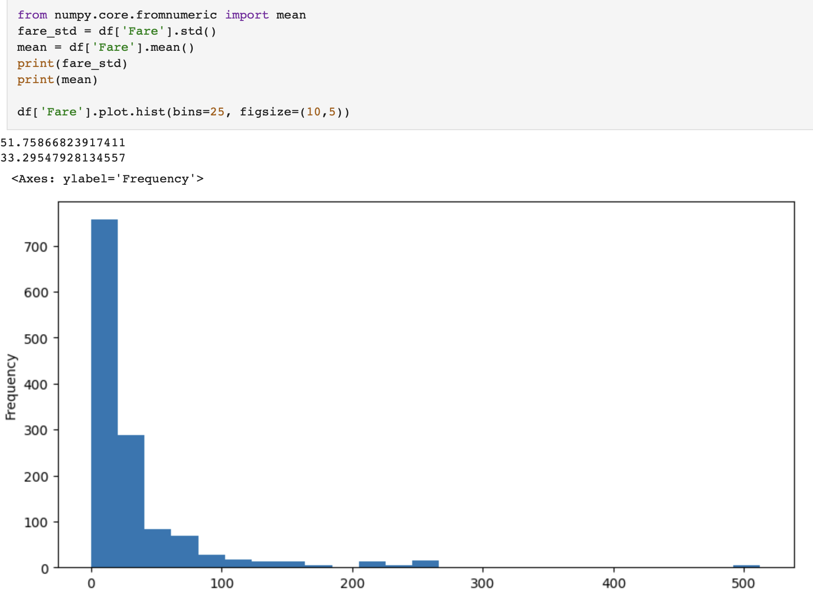
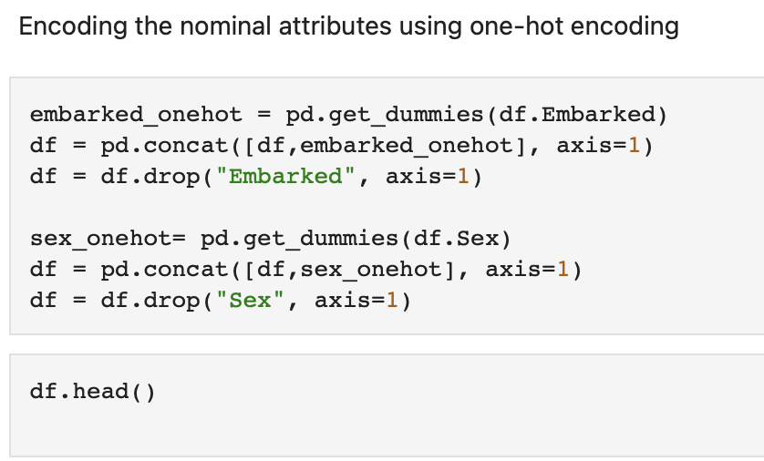
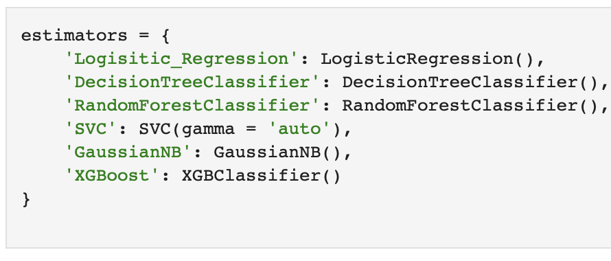

In this blog post, I'll discuss my approach and findings from the Titanic Passenger Classification assignment. The goal was to predict whether a passenger survived or not based on various features.
In the field of data science, the Titanic dataset serves as a classic playground for predictive modeling. The goal is to develop a model that predicts whether a passenger survived or not based on various attributes. This exercise not only hones our data science skills but also allows us to delve into the historical context of the Titanic disaster.
Before diving into the code, let's explore the dataset and gain insights into its structure. Visualization tools like Matplotlib and Seaborn can help us understand the distribution of features, identify patterns, and spot potential correlations. By visualizing aspects like passenger demographics, ticket class, and survival rates, we can form initial hypotheses and guide our preprocessing steps.
  Effective data preprocessing is crucial for building robust machine learning models. In this step, we handle missing values, normalize and standardize attributes if needed, and encode nominal and ordinal attributes. Additionally, we remove irrelevant attributes such as 'ID', 'Ticket', and 'Name' that may not contribute significantly to the predictive power of the model.
Now, let's experiment with various classification models to identify the most suitable one for our task. We'll utilize a set of estimators, including Logistic Regression, Decision Tree Classifier, Random Forest Classifier, Support Vector Classifier (SVC), Gaussian Naive Bayes, and XGBoost. To ensure robustness, we'll explore different hyperparameters, specifically focusing on the number of splits for cross-validation with values of 5 and 10.
In conclusion, our Titanic classification assignment journey unveiled valuable insights into data science and machine learning. After thorough experimentation, the Decision Tree Classifier emerged as the top performer, boasting the highest accuracy with 10 splits for cross-validation.This exercise emphasizes the importance of meticulous model selection and hyperparameter tuning. The skills developed here extend beyond the Titanic dataset, providing a foundation for solving diverse real-world problems.